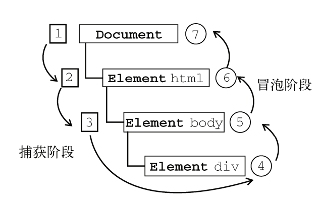

js中的event事件对象总结
事件
JavaScript 与 HTML 之间的交互是通过事件实现的。事件就是文档或浏览器窗口中发生的以些特定的交互瞬间。可以使用事件处理程序来预订事件，以便事件发生时执行相应的代码。
事件流
事件流描述的是从页面中接收事件的顺序。但是，IE 和 Netscape 提出了几乎完全相反的事件流的概念。 IE 中的事件流是事件冒泡流，而 Netscape 的事件流是事件捕获流。
事件冒泡
IE 的事件流叫做事件冒泡，即事件开始时由最具体的元素( 文档中嵌套层次最深的那个节点 )接收，然后逐级向上传播到较为不具体的节点。以下面的 HTML 页面为例：
<!DOCTYPE html>
<html>
<head>
<title>event bubbling example</title>
</head>
<body>
<div id="myDiv">my div</div>
</body>
</html>
如果你单击了页面的div元素，那么这个click事件会按照如下顺序传播：
- div
- body
- html
- document
也就是说，click事件首先在div元素上发生，然后沿着 DOM 树向上传播，直到传播到document对象。所有现代浏览器都支持事件冒泡。
事件捕获
Netscape 团队提出的另一种事件流叫事件捕获流。与事件冒泡的思想相反，事件捕获的思想是不太具体的节点应该最早接收到事件，然后沿着 DOM 树向下传播，直到传播到最具体的节点。仍然以前面的 HTML 页面为例，如果你单击了页面的div元素，那么这个click事件会按照如下顺序传播：
- document
- html
- body
- div
由于老版本的浏览器不支持事件捕获，因此很少有人使用。
DOM事件流
“ DOM2级事件 ”规定的事件流包含三个阶段：事件捕获阶段、处于目标阶段和事件冒泡阶段。仍然以前面的 HTML 页面为例，单击div元素会按照下图所示的顺序触发事件。
事件处理程序
事件处理程序的名字以 "on" 开头。为事件指定事件处理程序的方法有多种。
-
HTML 事件处理程序
可以用一个与相应事件同名的 HTML 特性来指定。例如：
<input type="button" name="clickme" value="click me" onclick="alert('clicked')">这种方法 HTML 与JavaScript 耦合太高，灵活性很差。
-
DOM0级事件处理程序
这种方法通过将一个函数赋值给一个事件处理程序属性。非常简单且具有跨浏览器的优势。例如：
var button = document.gtElementById("myButton");
button.onclick = function(){
console.log("clicked");
}通过这种方法指定的事件处理程序被认为是元素的方法，因此在其依附的元素的作用域中运行。通过调用button.onclick=null即可删除事件处理程序。
-
DOM2级事件处理程序
“DOM2级事件”分别定义了 addEventListener()和removeEventListener()用来添加和删除事件处理程序。他们都接受3个参数：要处理的事件名、作为事件处理程序的函数和一个布尔值。布尔值为 true 代表在捕获阶段执行时间处理程序，为 false 代表在冒泡阶段执行事件处理程序。例如：
button.addEventListener("click",function(){
console.log("clicked");
},false);通过这种方法指定的事件处理程序也是在其依附的元素的作用域中运行。若要删除这个事件处理程序，第二个参数不能传入匿名函数，因为传入removeEventListener()的函数必须与传入addEventListener()的函数相同。例如：
var handler = function(){
console.log("clicked");
};
button.addEventListener("click",handler,false);
//其他代码
button.removeEventListener("click",handler,false);大多数情况下，都是将事件处理程序添加到事件流的冒泡阶段，这样可以最大限度地兼容各种浏览器。
-
IE 事件处理程序
IE 实现了 DOM 中类似的两个方法：attachEvent()和detachEvent()。这两个方法接收两个参数：要处理的事件名和作为事件处理程序的函数。因为 IE8 及更早版本只支持事件冒泡，所以通过attachEvent()添加的事件处理程序都会被添加到冒泡阶段。例如：
button.attachEvent("onclick",handler);
//其他代码
button.detachEvent("onclick",handler);这种方法与 DOM 事件处理程序的主要不同在于，它的事件处理程序是在全局作用域运行。
-
跨浏览器的事件处理程序
要保证处理事件的代码能在大多数浏览器下一致地运行，只需关注冒泡阶段。我们创建一个EventUtil 对象，里面包含addHandler()方法和removeHandler()方法。
var EventUtil = {
addHandler : function(element,type,handler){
if(element.addEventListener){
return element.addEventListener(type,handler,false);
} else if(element.attachEvent){
return element.attachEvent("on"+type,handler);
} else {
element["on"+type] = handler;
}
},
removeHandler : function(element,type,handler){
if(element.removeEventListener){
return element.removeEventListener(type,handler,false);
} else if(element.detachEvent){
return element.detachEvent("on"+type,handler);
} else {
element["on"+type] = null;
}
},
};
事件对象
在触发 DOM 上的某个事件时，会产生一个事件对象 event，包含着所有与事件有关的信息。
-
DOM 中的事件对象
兼容 DOM 的浏览器会把一个 event 对象传入到事件处理程序中，无论指定的事件处理程序采用什么方法( DOM 0级或 DOM 2级 )。看下面的例子：
button.onclick = function(event){
console.log(event.type); //"click"
}
button.addEventListener("click",function(event){
console.log(event.type); //"click"
},false);DOM 中的 event 对象有很多属性，根据触发事件的不同而异。通用的属性有：
-
preventDefault()：用来取消事件的默认行为( cancelable是true时可以使用 )
要阻止事件的默认行为，可以使用preventDefault()方法。例如阻止链接导航的默认行为：
var link = document.getElementById("myLink");
link.onclick = function(event){
event.preventDefault();
} -
stopPropagation()：立即停止事件在 DOM 层次中的传播，取消事件的进一步捕获或冒泡( bubbles是true时可以使用 )：
button.onclick = function(event){
console.log("button clicked"); //"click"
event.stopPropagation(); //阻止把事件分派到其他节点
}
document.body.onclick = function(){
console.log("body clicked");
}对于这个例子，如果不调用stopPropagation()，点击button是会输出两条信息："button clicked" 和 "body clicked"。调用了stopPropagation()之后，由于click事件根本不会传播到body，所以只有一条输出信息："button clicked"。
- stopImmediatePropagation()：取消事件的进一步捕获或冒泡，同时阻止任何事件处理程序被调用
- type：事件的类型
- target：事件的目标
- currentTarget：事件处理程序当前正在处理事件的那个元素。在事件处理程序内部，始终有 this===currentTarget。
- eventPhase：调用事件处理程序的阶段，1表示捕获阶段，2表示：“处于目标”，3表示冒泡阶段。
-
-
IE 中的事件对象
在 IE 中，用 DOM0级方法添加事件处理程序时， event 对象是作为 window 对象的一个属性存在的。例如：
button.onclick = function(){
var event = window.event;
console.log(event.type); //"click"
}如果是通过attachEvent()添加的，就会有一个 event 对象作为参数传入事件处理程序中，例如：
button.attachEvent("click",function(event){
console.log(event.type); //"click"
})这种情况下也可以使用 window.event 访问 event 对象。
IE 中的event 对象同样包含各种属性和方法，根据触发事件的不同而异。通用的属性有：
-
returnValue ：设置为 false 就可以取消事件的默认行为，相当于 DOM 中的 preventDefault()，例如：
link.onclick = function(){
wondow.event.returnValue = false;
} -
cancelBubble：设置为 true 就可以取消事件冒泡，相当于 DOM 中的stopPropagation()，例如：
button.onclick = function(){
console.log("button clicked");
window.event.cancelBubble = true;
}
doocument.body.onclick = function(){
console.log("body clicked");
}这样点击 button 并不会触发 body 的 onclick 事件。
- type：事件的类型
- srcElement：事件的目标，相当于 DOM 中的 target属性
-
-
跨浏览器的事件对象
可以根据 DOM 和 IE 中 event 对象的共性拿出跨浏览器的事件对象的方案。对上面的 EventUtil对象加以增强，添加如下方法：
var EventUtil = {
addHandler : function(element,type,handler){
//...
},
removeHandler : function(element,type,handler){
//...
},
getEvent : function(event){
return event ? event : window.event;
},
getTarget : function(event){
return event.target || event.srcElement;
},
preventDefault : function(event){
if(event.preventDefault){
event.preventDefault();
} else {
event.returnValue = false;
}
},
stopPropagation : function(event){
if(event.stopPropagation){
event.propagation();
} else {
event.cancelBubble = true;
}
}
};